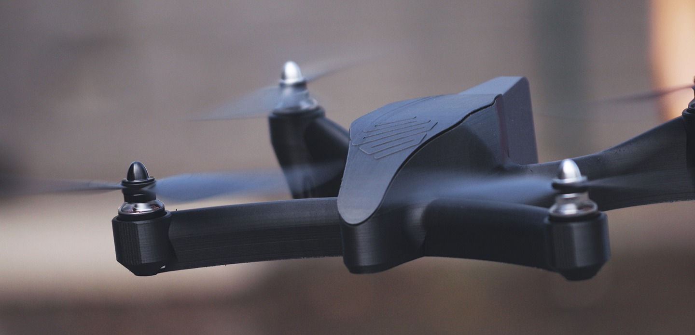
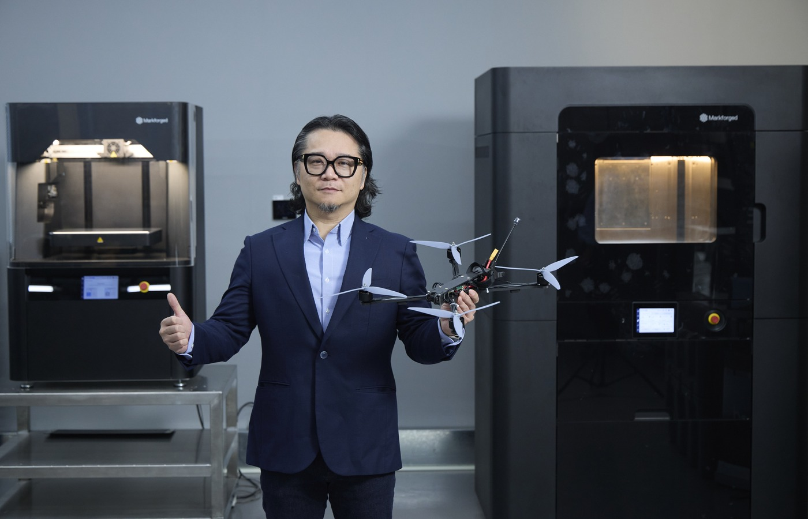

市場觀點

台灣只談到第一層
近十萬架。這是把 2026 年度軍用無人機採購，與 2026 至 2028 年政府機關民用採購加總之後，台灣無人機產業手上這張訂單的量級。國防預算 9,495 億元、約占 GDP 3.32%，是歷史新高。這兩週的討論集中在同一個問題上：誰進得了非紅供應鏈。
通過非紅審查，不等於供應鏈安全。
那只是第一層。
HISTORY · 這條路台灣走過一次
換得掉組裝，換不掉上游
判斷一個供應鏈重組做得成不成，不必等三年。台灣在半導體已經走過完整的一輪，結果是現成的對照組。
台灣的半導體產值全球第二，IC 製造與封測市佔世界第一，高階製程與前瞻研發留在島內，台廠在台布局占比約九成。從「誰來製造」這個問題看，台灣贏了。
但同一份產業盤點裡，另一行寫著：半導體設備與材料的自給率仍然不足。換句話說，最難換的那一層，二十年後還在那裡。產業鏈近年又被要求「台灣＋1」，在島外建立產線——換的仍然是組裝的位置，不是上游的依賴。
電池是第二個對照。美國在電池供應鏈推動去中化，台灣材料廠因此拿到訂單；電池也從單純的產業競爭，被重新定義成國安規格。但真正決定長期位置的，同樣不是誰組裝，是誰掌握材料與設備。
無人機現在站的，就是當年半導體站過的那個位置。換供應商是看得見、算得出來、能上新聞的那一步。真正難的那層，通常不在零件清單上。
FRAMEWORK · 三層模型
供應鏈安全有三層，而且是遞進的
把它拆開來看會清楚很多。供應鏈安全不是一道是非題，是三層遞進的結構。
三層的關係不是並列。第一層做完只是及格；第二層沒做，第一層的努力會從後門漏光；第三層沒做，前兩層會在交期壓力下被迫讓步——當客戶要的東西兩週後才做得出來，所有人都會開始找捷徑。
目前台灣的公開討論，九成九集中在第一層。
LAYER 2 · 資料主權
零件合規了，那檔案呢
當製造流程數位化，零件的幾何、材料參數、製程紀錄、檢測報告，全部變成檔案。這些檔案存在誰的伺服器上、落在哪一國的管轄區、誰有權調閱——這是供應鏈安全的第二層，而它幾乎不在現在的討論範圍內。
這不是假設性的風險。多數積層製造平台預設把切片運算與專案管理放在雲端，對一般製造業沒有問題，效率也確實比較好。但對國防研究單位，雲端是一道過不了的門檻——不是流程麻煩，是規範上不允許。
這一點決定了誰進得去。我們在中科院能打開四個研究所——航空、飛彈火箭、化學，加上海軍專案——切入點不是設備規格，是地端部署、不上雲、角色權限控管。那是那些場域唯一能接受的配置。把論述建立在零件級可追溯性上，正好對得上他們既有的品保文件，不必為了導入新技術重寫一套品保制度。
一個做法上的細節值得講清楚：可追溯性與雲端並不是綁在一起的。材料數據、製程參數、檢測報告隨件留存，讓設計、製程與品保用同一套數據判斷零件能不能上線，這件事在地端一樣做得到。把兩者綁定，是平台的商業選擇，不是技術的必然。
- 切片運算在供應商雲端
- 專案與零件庫存放雲端
- 幾何檔案離開本地管轄區
- 調閱權限由平台定義
- 運算與資料留在場域內
- 角色權限由機構自己控管
- 零件級可追溯性照常保留
- 對得上既有品保文件
LAYER 3 · 產能主權
交期壓力會逼你在前兩層讓步
第三層最容易被當成純粹的效率問題，其實它是前兩層的保險絲。
近十萬架不是一次下單、一次交付，是三年內分批交付，而且規格會改。無人機不是一款產品，是一個每季都在改的平台。中科院的狙擊手中程防禦無人機採模組化設計加積層製造，公開說法就是為了降低對傳統模具與複雜工裝的依賴。
模組化的另一面，是治具跟著改。一條組裝線上真正讓產出停住的，往往不是缺機台，是缺那一套還沒做好的定位夾具、軟爪、防呆板。這些東西不需要工件級的精度，卻長年跟工件搶同一條 CNC 排程。
這裡有一個常被混淆的規格。以 ±0.02 mm 為例，那是工件加工面的要求，不是治具本體的要求；襯套與嵌件的作用在耐磨與鎖固，不是用來彌補公差。把治具的精度需求跟工件綁在一起，是 CNC 排程塞爆的根本原因之一。
我們在中科院做的一具無人機機體，用連續碳纖維列印，機臂、中心板與電池座是單一連續纖維結構，已在中科院通過蒲福風級 9 級的風洞測試，機型是 X7 Field Edition——強固化、可部署、不依賴雲端。
爆炸圖攤開來，最值得看的不是列印出來的那些零件，是消失掉的那些。原本需要分件製造、再靠治具定位組裝的結構，現在一體成形。少掉的零件，連帶少掉的是對應的夾治具、對應的組裝工時、對應的公差堆疊。這個案子在中科院航空研究所的專案時程整整提前一年——提前的那一年不是靠趕工，是靠把「設計改一次要等兩週」變成「設計改一次等隔夜」。

CONCLUSION
先畫那張圖
不必先談設備。這個月做一件事就好：把你的製造資料流向畫成一張圖。幾何檔案、材料參數、製程紀錄、檢測報告，各自存在誰的伺服器上、落在哪個管轄區、誰調得出來。
如果這張圖畫不出來，你的供應鏈安全只做完第一層。
把三層盤一次
三層盤點不是採購流程，是一次工程面的對帳：零件來源、資料流向、關鍵治具的排程佔用。Markforged 台灣卓越中心與大中華區團隊可以協助走完這一輪，從現有產線的實際數據出發，不從設備規格出發。
- 製造資料流向盤點：哪些檔案離開了你的管轄區
- 關鍵治具排程稽核：它們佔掉多少 CNC 工時
- 國防與高資安場域的地端部署配置說明